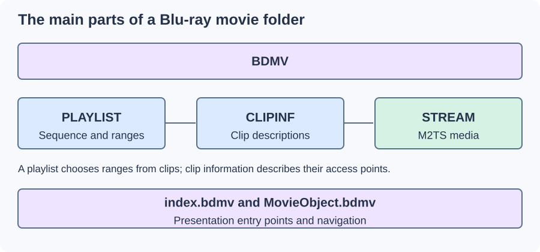

Blu-ray File Structure
A Blu-ray movie presentation uses playlists, clip descriptions, and transport-stream media files within a BDMV directory structure.
A Blu-ray feature can reuse some clips across different cuts and languages. Its BDMV structure keeps the stored media separate from the playlist selecting which ranges form a presentation.

Simplified directory relationships. Optional directories and application details are omitted.
PLAYLIST contains .mpls descriptions. CLIPINF contains .clpi clip information and access descriptions. STREAM contains the .m2ts encoded media. The playlist uses clip identities and ranges; the clip information helps the reader obtain suitable positions in the corresponding stream.
Playlist time mapped to three clip ranges
Take an invented feature playlist with these entries:
| Clip | Source range | Length | Position in the presentation |
|---|---|---|---|
| 00010 | 10–70 s | 60 s | 0–60 s |
| 00020 | 0–600 s | 600 s | 60–660 s |
| 00030 | 5–95 s | 90 s | 660–750 s |
The viewer sees 750 seconds, or 12 minutes 30 seconds. A request for presentation time 700 seconds falls into clip 00030 at source time 5 + (700 − 660) = 45 seconds.
The reader resolves that clip's information, locates the relevant M2TS data, and begins decoding from an appropriate access point. It then maps the chosen source interval into the presentation's clock. The stored clip's complete duration is not the same as its selected contribution here.
Another playlist could use an alternate middle clip or different ranges while reusing the opening and ending. Its scene sequence can differ even if the largest individual stream file is shared.
Entry logic surrounds the playlist
index.bdmv and movie-object information provide presentation entry and navigation. Interactive BD-J material can implement further application behaviour. Reading one playlist's video is a narrower task than executing the entire disc's menus and application.
A reader selecting the actual feature should therefore identify the intended playlist or disc navigation choice. File size and duration can be clues, but cannot uniquely distinguish reused clips, alternative cuts, or different branching arrangements.
Create a self-contained feature
A remux must follow the selected playlist, obtain each requested range, and write an output timeline with the chosen audio and subtitles. Chapter positions need to map to that assembled timeline rather than remain unrelated clip-local times.
For Emby, a disc presentation and a linear MKV/MP4 feature are different source forms. Library organization gives their context, while the playlist trace explains why copying one M2TS can produce the wrong movie. Preserving encoded streams is valuable only after the requested ranges and sequence have been identified.